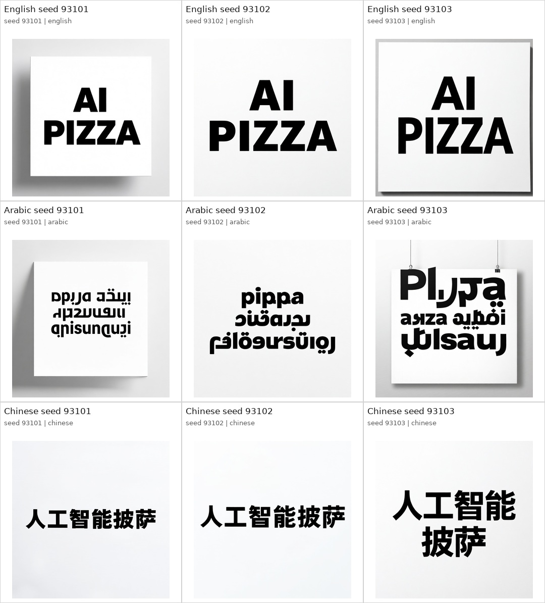
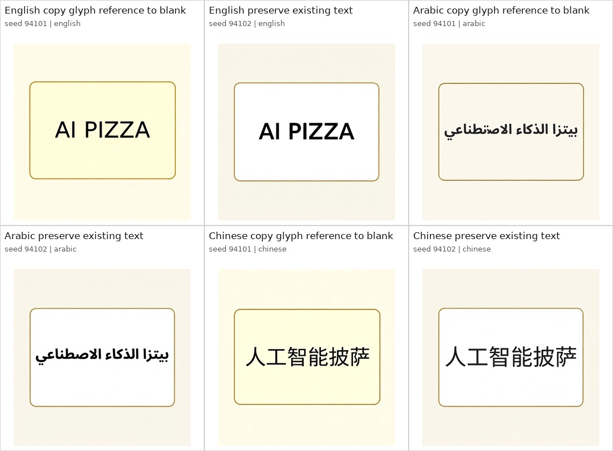
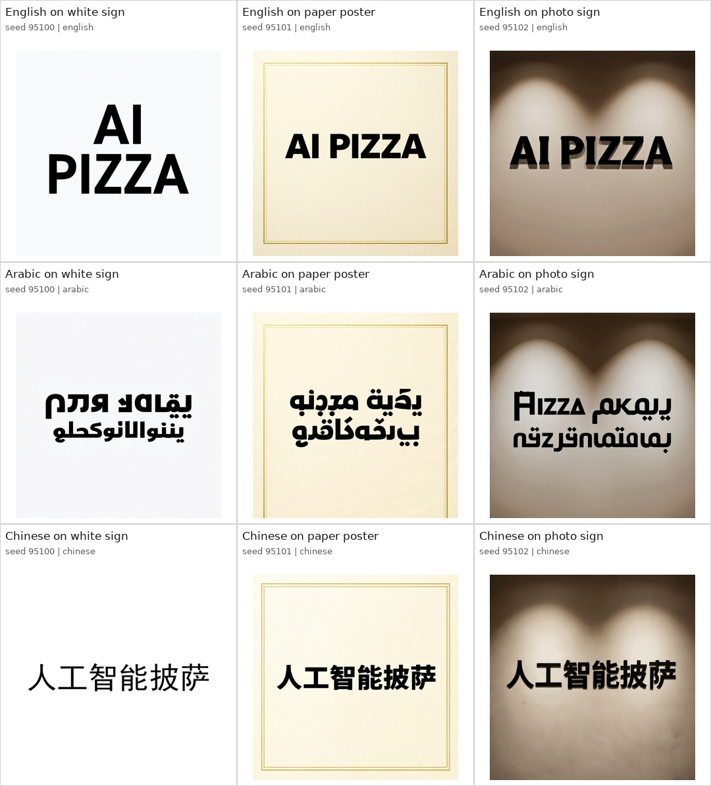
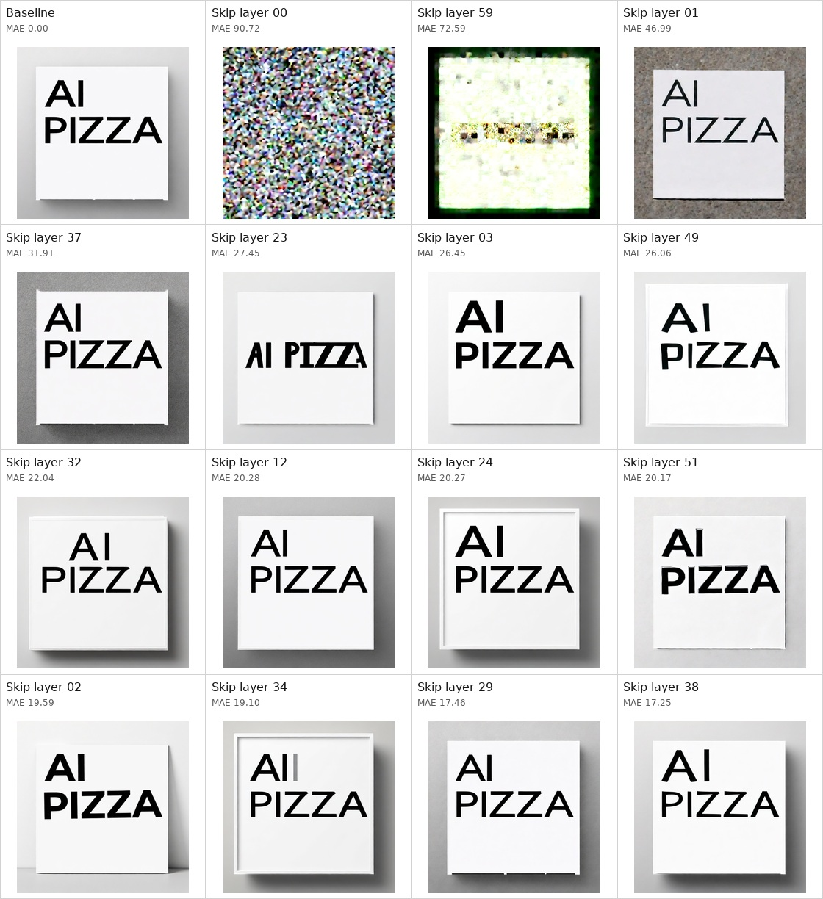

Qwen Text Rendering: Next Experiments
Each page is a separate investigation with its own contact sheet, individual images, prompts, and CSV.
Experiment Pages

Experiment 01: Text Size Sweep
Tests whether requested text size changes success/failure across English, Arabic, and Chinese.
Tests whether requested text size changes success/failure across English, Arabic, and Chinese.

Experiment 02: Seed Sweep
Tests whether success/failure is stable or seed-dependent under the same prompt.
Tests whether success/failure is stable or seed-dependent under the same prompt.

Experiment 03: Reference Glyph Copy
Tests whether already-rendered reference glyphs help Qwen copy or preserve exact text.
Tests whether already-rendered reference glyphs help Qwen copy or preserve exact text.

Experiment 04: Background Complexity
Tests whether visual context makes exact text rendering worse.
Tests whether visual context makes exact text rendering worse.

Experiment 05: Arabic Prompt Variants
Tests whether prompt wording alone can repair Arabic text fidelity.
Tests whether prompt wording alone can repair Arabic text fidelity.

Experiment 06: Long Text Stress Test
Tests English, Arabic, and Chinese at 10, 20, and 50 target words.
Tests English, Arabic, and Chinese at 10, 20, and 50 target words.

Experiment 07: Layer Ablation Probe
Skips one Qwen transformer block at a time and ranks visual impact versus baseline.
Skips one Qwen transformer block at a time and ranks visual impact versus baseline.